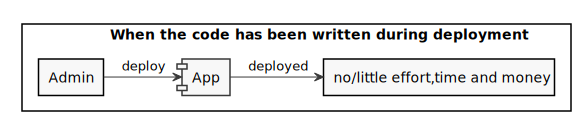
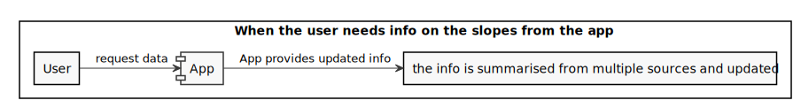
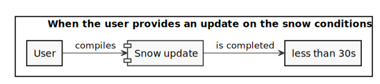
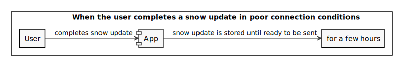
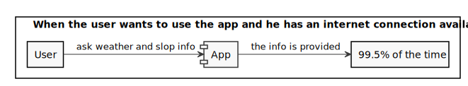
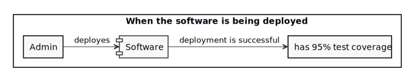
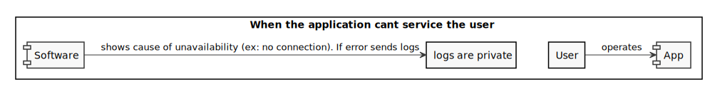

Example Scenario 1
Quality: Affordability , Portability , Deployability
Scenario: The code written for the application is compatible with both Android and IoS with none or relatively trivial changes costing little effort, time and money to be deployed on both OS at the same time once the code is written.
Example Scenario 2
Quality: Interoperability , Usability
Scenario: The software should be able to fetch data from multiple weather APIs in order to provide users with reliable data over a vast amount of locations. The fetching and elaboration of this data to a usable summary should be done server side for efficiency and speed. Our server should act as an adaptor over the whole data for the application.
Example Scenario 3
Quality: Usability , Performance
Scenario: The survey the user completes to provide the us with updates on snow conditions should on average take less than 30s to complete.
Example Scenario 4
Quality: ? maybe it's functional ?
Scenario: The application should be able to store a snow update in case of poor connection (as often is on the slopes) for at least a few hours and send the data later to our server without having the user compile another snow update.
Example Scenario 5
Quality: Availability
Scenario: The application should have an uptime of at least 99.5% for weather and slope info assuming a connection is available.
Example Scenario 6
Quality: Deployability , Maintainability
Scenario: The whole software (app + server) should have a test coverage of at least 95% when deployed and for its whole lifecycle.
Without said requirement an automatic pipeline should fail the deployment.
Example Scenario 7
Quality: Visibility , Maintainability , Privacy
Scenario: When the service of the App is not available the application should show the user a clear message stating the reason. If the reason is a fault in the software a log should be sent to the developer not containing sensible user data.
